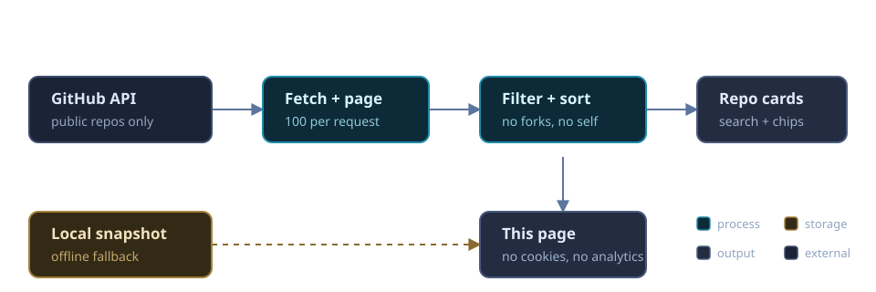

~/featured/repopulse
RepoPulse
Signed GitHub-webhook activity signal with a privacy-filtered public status feed — engineering activity without retaining raw payloads or naming private repos.
TypeScript · Cloudflare Workers
// REPO DIRECTORY · SYNCED LIVE FROM GITHUB
Systems, tools & practical AI — written across Rust, Go, Python and TypeScript. This page is the front door to every public repository: searchable, filtered, and refreshed straight from the GitHub API every time you visit.
// HAND-PICKED SIGNALS
The builds that best show how I work: small scope, real workflows, verifiable results.
Signed GitHub-webhook activity signal with a privacy-filtered public status feed — engineering activity without retaining raw payloads or naming private repos.
An agentic edge gateway exploring resilient AI-provider federation — routing, retries and failover at the edge instead of in a datacenter.
A full-stack luxury e-commerce experiment: Next.js client, Rust API and a WebAssembly scent-packaging module.
A unified management platform for FC Ararat Academy staff, players and members in Shiraz — one login for the whole club's operations.
// AUTO-SYNCED INDEX
Pulled live from api.github.com/users/Shaiinarab. Publish something new and it appears here on the next visit — no manual updates.
Couldn't reach the GitHub API. You may be rate-limited or offline — showing the last known snapshot instead.
// RUNNING, NOT JUST COMMITTED
Public surfaces you can poke right now — no sign-up, no data collected.
Compact, privacy-filtered activity snapshots served from a Cloudflare Worker.
Browser-only demo comparing a role description against reviewed public project evidence. No inputs stored, no ranking verdicts.
Minimal JSON endpoint describing this portfolio — machine-readable, public-safe by design.
// UNDER THE HOOD
One static page, one public API, zero trackers. The directory is rebuilt in your browser on every visit, so new repositories show up without a redeploy.

// OPEN CHANNEL
Instead of talking, send me your favorite track. 🎧 Music speaks what cannot be expressed.